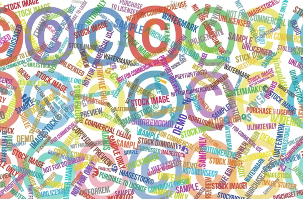

※画像は生成AI（Gemini）を使用して作成
現在、生成AIは仕事やプライベートなど、さまざまな場面で活用されるようになりました。 スマートフォンやパソコンがあれば誰でも簡単に利用できる便利なツールですが、SNSや会社資料作成で生成AIを活用し、投稿・掲載した際に著作権侵害にあたり、逮捕や書類送検に至ることもあります。 初めに「生成AI 著作権侵害」でGoogle検索すると文化庁作成の「AIと著作権」という2023年実施のセミナー資料がありました。 そちらのPDFを生成AIにて要約させた結果、AIと著作権の関係については、大きく3つの場面に分けて検討する必要があります。
- 1.開発・学習段階（AIにデータを学習させる場合）
- 2.生成・利用段階（AIで生成したコンテンツを公開・販売する場合）
- 3.AI生成物は「著作物」に当たるか（著作権が発生するか）
難しい日本語が羅列しているので、生成AIを活用し、自分も記事を書きながら学び、わかりやすく解説していきます。
1. 開発・学習段階（AIにデータを学習させる場合）
著作権法第30条の4により、AI開発のための情報解析のように、著作物の「享受（鑑賞して楽しむことなど）を目的としない利用」については、原則として著作権者の許諾なく行うことが可能です。 ただし、情報解析用に販売されているデータベースをAI学習目的で無断複製するなど、「著作権者の利益を不当に害することとなる場合」や、享受目的が併存するような場合は、原則通り権利者の許諾が必要となります。
「享受（きょうじゅ）」とは
かっこ内にあるように（鑑賞して楽しむことなど）とのことなので、 「AIを賢くするために大量の画像や文章を読み込ませて分析する作業」自体は、その作品をAIが数値データとしてインプットしているだけであり、
人間が鑑賞して楽しんでいるわけではないため、基本的には違法にはなりません。
しかし、有料で販売されているデータを勝手に使って学習させたり、特定のクリエイターの絵柄をそっくりそのまま出力させる目的で学習させたりする場合は、権利者の不利益になるためNG（許諾が必要）になる可能性があります。
過去の事例としては海外で海賊版サイトから700万冊の書籍をダウンロードし、AIの学習に使用したと提訴され、2000億円超の支払いで2025年に和解・仮承認をしたケースがあります。
【2026年 3月現在での変更点・注意点】
2023年はやや抽象的ではあったが、2024年の文化庁の新たな見解により、現在はルールがより明確化されています。特定のクリエイターの画像・文章などだけを狙って大量に学習させることは、 意図的な過学習（オーバーフィッティング）とみなされ、著作権侵害になる可能性が高いため絶対にやめましょう。また、AIが回答を生成する際、社内データベースや外部サイトから既存の著作物を引っ張ってきて、 そのままの表現を出力させるような仕組みを作るためのデータ複製は、原則として許諾が必要とされました。
2. 生成・利用段階
（AIで生成したコンテンツを公開・販売する場合）
AI生成物が既存の著作権を侵害しているか否かは、人がAIを使わずに作品を制作した場合と全く同じ基準で判断されます。 具体的には、既存の著作物との「類似性」と、既存の著作物をもとに作成したかという「依拠性」の両方が認められるかが要件となります。
私的に鑑賞するために生成するだけなら例外（権利制限規定）として許容されますが、類似性と依拠性のあるAI生成物を無断でネット上に公開（アップロード）したり販売したりすると著作権侵害となり、損害賠償請求、差止請求、刑事罰などの対象となります。これはつまり、AIで作ったイラストや文章が、既存のアニメキャラクターやクリエイターの作品にそっくり（類似性）で、なおかつその元ネタを知った上で作らせた（依拠性）と判断されると、著作権侵害になってしまうということです。
「個人でこっそり出力して楽しむ」分には問題ありませんが、生成したものをそのままInstagramやX(旧Twitter)にアップしたり、仕事のプレゼン資料に使ったり、販売したりする際は十分に注意が必要です。
例えば、画像では生成AIへのプロンプト（指示文）に「〇山〇明風の画像を作成して」と入力して生成した画像は「類似性」「依拠性」に当てはまる可能性が高いですので、SNSなど公開前に「既存の何かに似すぎていないか？」を確認するようにしましょう。
生成したモノをSNSに載せたいと思ったら、最近ではテレビや広告でも見られる
「※画像は生成AIを使用して作成しています。」という注記やウォーターマークなどを入れるなどを記載し、生成AI作成を強調し発信する必要があります。
本記事内で掲載している画像は生成AIで作成した画像でモチーフは 「パブリックドメイン（公共財産）」になっているモノを使用し、AIで作成しているので、 わざと文字化けさせてます。
2025年に日本でも3件書類送検、逮捕されたケースがあります。
表紙として使用・複製し書類送検
書類送検
3.「AIによる無断カラー化」という発想自体は興味深いものですが、 このような行為は興味を持つ人も多いかもしれませんが、無断で販売すれば著作権侵害となり、逮捕される可能性があります。
【2026年 3月現在での変更点・注意点】
生成したものをそのままSNSや業務に使うのではなく、「Google画像検索などで既存の作品と酷似していないかチェックする」というプロセスを設けることが、企業や個人のガイドラインとして強く推奨されるようになっています。 また、AIに機密情報や他人の著作物をプロンプトとして入力すること自体を制限するルールが一般化しています。 機密情報を入力するとAIの学習の為に使用され、AI運用会社サーバーから情報が流出する恐れもあるため、個々人が十分に注意する必要があります。
3. AI生成物は「著作物」に当たるか（著作権が発生するか）

※画像は生成AI（Gemini）を使用して作成
人が短い指示（プロンプト）を与えてボタンを押すだけでAIが自律的に生成したものは、人の「思想または感情を創作的に表現したもの」ではないため、著作物には該当しません。 一方で、人がAIを単なる「道具」として使用したと認められる場合、すなわち人に「創作意図」があり、結果を吟味して修正を加えるなどの「創作的寄与」があったと認められる場合は、そのAI生成物は著作物に該当し、 AI利用者が著作者になると考えられています。 簡単に言うと、「AIにお任せで短い指示でポンと出力しただけのもの」は、誰の著作物でもない（フリー素材のような扱い）。 部下に大ざっぱな指示だけし、当人は何もせず、プレゼンで「私が作りました。」って言ういいところだけ持っていく上司のような状態では著作物としては認められないということです。 一方で、人間が「こういう作品にしたい」という強い意図を持ち、何度もプロンプトを細かく調整したり、出力された画像や文章を下書きとし、自分で大幅な加筆・修正を行ったりして「自分自身のオリジナリティ」を注ぎ込んだと言える場合は、 あなた自身の著作物として認められる可能性があります。 （※ただし、どれだけ加筆修正を行っても、元のAI生成物が他人の既存作品に類似している場合は、著作権侵害となるため注意が必要です）
【2026年 3月現在での変更点・注意点】
2024年に成立した世界初の包括的なAI規制法（AI法/AI Act）が、2025年〜2026年にかけて順次欧州などから施行されています。 これにより、「AIによって生成されたコンテンツであることを明示する（ウォーターマークを入れるなど）」という透明性の確保が世界的なスタンダードになりつつあり、日本でもこの流れを受け議論が活発化しています。
まとめ：生成AIを安全に活用するためのポイント
生成AIはとても便利ですが、使い方を一歩間違えると著作権トラブルに巻き込まれる可能性があります。 安全に活用するために、以下のポイントを意識しましょう。
- プロンプト（指示文）に特定の作家名や既存のキャラクター名、作品名を入れて生成しない
- 仕事やSNSで使う場合は、生成物をそのまま使わず、「類似性」「依拠性」がないか確認し、
必要な修正（ウォーターマークなど）を加える - 投稿・提出の前に見返し、生成AIに著作権侵害のリスクがないか確かめる
- 他人の権利を侵害していないか、常に配慮する意識を持つ
- この記事は2026年 3月に作成の為、インフルエンサーやSNSを多用する方や生成AIの回答を鵜呑みし、コピペする方は「著作権侵害」に関しての法律が随時変わっている可能性があるので、情報をアップデートする必要がある
正しい知識を身につけ、アップデートしていき、AIという便利なツールを仕事やプライベートの強い味方にしていきましょう！